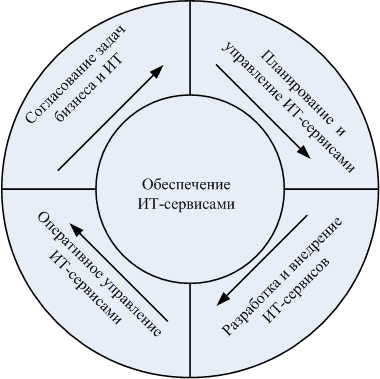

Модель информационных процессов ITPM (IT Process Model), возникла из модели управления архитектурой ISMА (Information Systems Management Architecture), предложенной IBM в 1979 году. Модель ITPM отличается от ITIL не только по способу деления процессов, но и по ряду терминологических моментов [1]. В реальности, ITPM - не модель в её практическом понимании, а среда разработки прикладной модели. ITPM включает семь групп процессов по числу факторов, влияющих на успех любого ИТ-проекта: улучшение взаимодействия с клиентами; обеспечение управленческих систем корпоративной информацией; управление ИТ-инфраструктурой с точки зрения потребностей бизнеса; реализация и развертывание решений; обеспечение ИТ-сервисами; поддержка ИТ-сервисов и решений; управление ИТ-ресурсами и ИТ-инфраструктурой. Успешное управление ИТ-сервисами немыслимо без четко определенных процессов взаимодействия с клиентами. ИТ-служба путем формирования разнообразных отчетов о положении дел с обслуживанием, может улучшить все формы работы с бизнес-пользователями, включая преобразование запросов в конкретные решения, обеспечение их поддержкой, что, в конечном итоге, будет способствовать повышению уровня обслуживания. Это обеспечивается составлением и соблюдением соглашений об уровне обслуживания SLA в терминах, понятных обеим сторонам. Обеспечение управленческих систем корпоративной информацией необходимо для повышения эффективности процесса принятия решений, обеспечивающего достижение максимальной отдачи от инвестиций. Задачи построения и развития ИТ-инфраструктуры предприятия должны быть централизованы и согласованы с задачами бизнеса, а также перспективными планами подразделений (например, отдел сбыта не заинтересован в увеличении товарных запасов и старается как можно быстрее их реализовать, однако для целей маркетинга в течение всего года будут требоваться образцы продукции, которых в нужный момент на складе просто не окажется). Централизация информации позволяет высшему руководству адекватно оценивать влияние каждого фактора на общие результаты бизнеса. ИТ-служба, отвечающая за обеспечение централизации, должна понимать бизнес-цели предприятия и принципы достижения этих целей, предлагая, в частности, план взаимодействия, оценки нагрузки на ИТ-инфраструктуру и т.п. Управление ИТ-инфраструктурой с точки зрения бизнеса предполагает оценку эффективности работы ИТ-службы по её вкладу в конечный результат деятельности бизнес-подразделений предприятия. Менеджмент ИТ-службы должен понимать цели бизнеса, способы их достижения и рассматривать деятельность ИТ-службы как обеспечивающего подразделения предприятия, способствующего достижению целей бизнес-подразделений. ИТ-директор должен ориентироваться в приоритетах выделения ресурсов для удовлетворения запросов бизнес-пользователей в соответствии со структурой бизнеса и при соблюдении корпоративных стандартов. Также требуется определять объем услуг, план мероприятий с оценкой их эффективности, а также оперативности, с которой ИТ-служба сможет отреагировать на изменения в бизнесе. Реализация и развертывание решений в ИТ-инфраструктуре предприятия должны подвергаться всестороннему анализу с точки зрения влияния на бизнес и рисков, связанных с этими решениями. Процедура внедрения решений должна быть унифицирована и выполняться примерно одинаково, как при развертывании системного программного обеспечения, так и при установке оборудования, бизнес-приложений и баз данных. Развертывание нового решения внутри уже существующей конфигурации должно осуществляться с минимальными нарушениями работоспособности последней. Особую роль в успешном внедрении играет управление изменениями: требуется идентифицировать все задачи, имеющие отношение к каждому конкретному изменению и контролировать их; необходим анализ результатов изменений; ведение базы изменений. Полезен также план координации всех технологических изменений внутри организации, с целью выполнения максимального количества изменений при минимальных нарушениях работоспособности бизнеса. Также важна оценка рисков для бизнеса в случае возникновении сбоев при внедрении Обеспечение услугами бизнес-пользователей является одним из основных направлений реализации модели ITPM. ИТ-сервисы могут требовать для своей поддержки разных ресурсов и дисциплин работы, выполняться с разными приоритетами. Необходим мониторинг процесса доставки ИТ-сервисов для выявления потенциальных нарушений и предотвращения сбоев критически важных функций. Благодаря интеграции этот процесс может выполняться автоматически или вручную через администратора. Задача ИТ-службы - предложить структуру доставки ИТ- сервисов и план, в котором должно быть указано место и время их предоставления, а также перечень необходимых ресурсов. Для составления такого плана ИТ-служба через единую точку входа осуществляет взаимодействие с клиентом, получает все запросы на ИТ-услуги, выполняет их анализ и интеграцию для выделения ресурсов. Предоставление ИТ-сервисов должно сопровождаться управлением изменениями в запросах пользователей: требуется идентифицировать факторы, важные для бизнеса и способные его улучшить; понять, что в первую очередь требуется для бизнес-клиентов; определить адекватные метрики оценки степени удовлетворенности пользователя; наметить и реализовать план мероприятий по улучшению обслуживания. Для поддержки ИТ-сервисов и решения задач ИТ-служба должна проводить ежедневный мониторинг процесса доставки услуг: слежение за доступностью системы; разрешение проблем; измерение производительности; ведение базы данных по конфигурации системы; выполнение резервного копирования; оценка необходимости своевременного масштабирования системы. Управление ИТ-ресурсами и ИТ-инфраструктурой предполагает мониторинг всех критически важных ресурсов, включая технологии и квалификацию персонала, необходимую для сопровождения текущей конфигурации, а также управление финансами, выделенными на развитие ИТ-инфраструктуры предприятия. Управление ИТ-инфраструктурой подразумевает работы по инвентаризации: лицензии на программное обеспечение и информационные ресурсы; замеры времени, необходимого для выполнения того или иного процесса; соблюдение политики безопасности.
Корпорация Hewlett-Packard (HP) – одна из компаний, полностью взявшая на вооружение рекомендации ITIL. Ее применение позволило HP не только войти в число ведущих поставщиков услуг консалтинга и внедрения, но и стать одним из крупнейших провайдеров услуг по обучению основам ITIL и сертификации этих знаний.
Для практического применения ITIL компания HP разработала собственный вариант методологии, получивший название "Типовой модели HP ITSM" (IT Service Management Reference Model – ITSM Reference Model). Ее первый вариант был опубликован в сентябре 1997 г., следующий - в январе 2000 г. Действующая сегодня версия HP ITSM 3.0 выпущена в июне 2003 г. Подчеркнем, что HP ITSM построена в точном соответствии с ITIL и не противоречит ее положениям.
Следует также отметить, что ITSM Reference Model носит лишь рекомендательный характер. Однако одна из ключевых идей этой методологии состоит в том, что, несмотря на разнообразие информационных систем, их работа на 80% может быть построена на базе стандартизованных процессов и регламентов. Поэтому адаптация методологии к конкретным, специфическим задачам предприятия требует настройки не более 20% системы ИТ-сервиса.
Методология HP - ITSM Reference Model в общем жизненном цикле обслуживания ИС выделяет пять основных групп процессов [ 3.1 ] , [ 3.2 ] :
согласование задач бизнеса и ИТ (Business – IT Alignment);
планирование и управление ИТ-сервисами (Service Design & Management);
разработка и внедрение ИТ-сервисов (Service Development & Deployment);
оперативное управление ИТ-сервисами (Service Operations);
обеспечение ИТ-сервисами (Service Delivery Assurance).
При этом первые четыре блока принято рассматривать как следующие друг за другом в рамках жизненного цикла работы ИТ-службы, а в центр помещать пятый блок, отвечающий за предоставление услуг ( рис. 3.1).

Блоки процессов модели ITSM Reference Model
Блок процессов согласования задач бизнеса и ИТ обеспечивает реализацию ИТ-стратегии в соответствии с целями бизнеса и создает основу для количественной оценки эффективности затрат на ИТ. В данный блок входят следующие процессы.
анализ потребностей бизнеса (IT business assessment);
разработка стратегии развития ИТ предприятия (IT strategy & architecture planning);
управление клиентами (Customer management);
планирование ИТ-сервисов (Service planning).
При разработке портфеля ИТ-сервисов процессы этого блока согласуют ИТ-стратегию предприятия с бизнес-целями, который обеспечивает максимальный эффект для бизнеса. Разработка эффективного портфеля ИТ-сервисов требует, чтобы информационные технологии определяли важные для бизнеса ИТ-сервисы и согласовывали ИТ-функции и бизнес-функции с доступными возможностями информационных технологий, потребностями бизнеса и приоритетами обслуживания бизнеса. Эти процессы позволяют ИТ-службе согласовывать ИТ-стратегию, архитектуру, организационную структуру и портфель ИТ-сервисов с бизнес-целями – и, в конечном счете, отображать стратегию в согласованные уровни обслуживания ИТ-сервисов.
Процесс анализ потребностей бизнеса подразумевает анализ рынка ИТ-услуг с точки зрения применения информационных технологий. Этот процесс предполагает проведение оценки того как ИТ-сервисы могут способствовать повышению эффективности деятельности предприятия, выявление важности ИТ-сервисов для бизнес-подразделений и оценки ресурсов для предоставления ИТ-сервисов. В частности, здесь определяется приоритет тех или иных сервисов с точки зрения пользователей и оценивается стоимость ИТ-сервисов.
Процесс разработки стратегии развития ИТ предприятия позволяет сформировать ИТ-стратегию на основе оценки бизнеса и спланировать ИТ-архитектуру. Согласование требований бизнеса и возможностей информационных технологий позволяет обосновать план внедрения ИТ-сервисов, важных для бизнеса предприятия, определить общие количественные показатели работы ИТ-службы и сформировать последовательный план развития ИТ-стратегии и ИТ-архитектуры.
Процесс управления клиентами позволяет ИТ-службе организовывать свою деятельность на партнерских отношениях с бизнес-пользователями информационной системы. Различные функции процесса позволяют отслеживать потребности клиентов, прогнозировать изменения их требований, доводить до клиентов существующие уровни обслуживания ИТ-сервисов, оценивать удовлетворенность клиентов и участвовать в совместном решении задач.
Процесс планирования ИТ-сервисов позволяет сформировать необходимые этапы внедрения сервисов, оценить риски, связанные с этим, наметить пути максимизации возврата инвестиций.
Блок процессов планирования и управления ИТ-сервисами формирует детализированную информацию по проектированию новых ИТ-сервисов, управлению доступностью и качеством этих сервисов, а также поддержания нужного баланса между качеством и стоимостью. Данный блок включает следующие процессы:
управление безопасностью (Security management);
управление непрерывностью (Continuity management);
управление готовностью (Availability management);
управление производительностью (Capacity management);
финансовое управление (Financial management).
Процесс управление безопасностью позволяет определять уровень безопасности, проводить мониторинг и управлять безопасностью корпоративной информации. Процесс формализует задачи обеспечения, управления и поддержания безопасности ИТ-инфраструктуры предприятия. Он является неотъемлемой частью общего корпоративного плана безопасности предприятия.
Процесс управления непрерывностью должен обеспечить ИТ-службе способность предоставлять заданный уровень услуг даже в результате серьезных внешних потрясений бизнеса.
Процесс управления готовностью управляет возможностью реального получения ИТ-сервисов пользователями в соответствии с согласованными уровнями обслуживания.
Процесс управления производительностью подразумевает, что ИТ-службы способны справляться с потоком поступающих заданий на предоставление ИТ-сервисов в соответствии с согласованными уровнями обслуживания.
Процесс управления финансами позволяет ИТ-службе определять стоимость предоставляемых ИТ-сервисов и покрывать свои расходы за счет платы со стороны потребителей.
Блок процессов разработки и внедрения ИТ-сервисов обеспечивает создание и тестирование новых сервисов и используемых ими инфраструктурных компонентов, включая установку оборудования и ПО, разработку приложений, обучение и т. п. Сюда входят два типа процессов:
разработка и тестирование (Service build and test);
ввод в эксплуатацию (Release to production).
В процессе разработки и тестирования выполняется разработка и проверка работоспособности и функциональности внедряемых ИТ-сервисов.
Процесс ввода в эксплуатацию обеспечивает развертывание новых или модернизированных компонентов и функций ИТ-сервисов для определенных пользователей с учетом их конкретных потребностей.
Блок процессов оперативное управление ИТ-сервисами обеспечивает ежедневный мониторинг предоставляемых ИТ-сервисов, управление запросами пользователей, отслеживание удовлетворенности клиентов и оценку общего уровня качества выполняемых сервисных работ. В данный блок входят следующие процессы:
оперативное управление (Operation management);
управление инцидентами (Incident and service request management);
управление проблемами (Problem management).
Процесс оперативного управления позволяет управлять постоянным процессом предоставления ИТ-сервисов в соответствии с заданными уровнями обслуживания.
Процесс управления инцидентами обеспечивает фиксацию всех инцидентов в информационной системе и быстрое реагирование на нужды потребителей.
Процесс управления проблемами фокусируется на задаче снижения числа инцидентов на основе анализа и прогноза работы информационной системы и заблаговременного устранения потенциальных проблем или более оперативного их разрешения.
Блок процессов обеспечение ИТ-сервисами описывает предоставление соглашений и информации, процедуры взаимодействия для выполнения соглашений об уровне сервиса. Центральное положение этой группы на рис. 3.1 отражает ее связующую роль в ITSM. В состав этой группы входят три типа процессов:
управление конфигурациями (Configuration management);
управление изменениями (Change management);
управление уровнями услуг (Service-level management).
Процесс управления конфигурациями отвечает за регистрацию и отслеживание состояния каждого компонента ИТ-инфраструктуры. Все сведения о компонентах (технические характеристики, состояние и различные взаимосвязи) хранятся в локальной базе данных Configuration Management Database.
Процесс управления изменениями гарантирует, что ИТ-службы используют стандартные методы и процедуры для управления всеми изменениями в информационной среде предприятия.
Процесс управления уровнями услуг позволяет выделять отдельные специфические услуги для потребителей в рамках стандартного спектра предоставляемого сервиса.
При внедрении процессного управления ИТ-службы предприятия методология HP ITSM[ [ 3.3 ] , [ 3.4 ] выделяет три основные стадии эволюции ИТ-служб:
управление инфраструктурой (Managing the infrastructure);
управление сервисами (Managing the services);
управление деловыми характеристиками ИТ (Managing the business value of IT).
Стадия управление инфраструктурой предполагает реализацию следующих процессов:
управление операциями;
управление конфигурацией;
управление изменениями;
управление инцидентами и сервисными запросами.
Стадия управление сервисами рекомендует внедрение следующих процессов:
создание и тестирование сервисов;
сервис-ориентированное управление;
управление проблемами;
управление непрерывностью;
управление готовностью;
управление объемами услуг;
управление финансами.
Стадия управление деловыми характеристиками ИТ определяет уровень стратегического бизнес-партнера руководства компании и ИТ-службы. Одна из важнейших характеристик этой стадии – полная интеграция ИТ-процессов в общую бизнес-модель организации. Как результат, такой статус подразумевает, что руководители предприятия должны четко понимать, как те или иные инвестиции в ИТ могут способствовать развитию основного бизнеса компании. На этой стадии должны быть реализованы остальные процессы ITSM Reference Model:
бизнес-оценка;
управление отношениями с пользователями;
планирование ИТ-стратегии и развития архитектуры;
планирование развития сервисов.
Реализация методологии ITSM Reference Model напрямую связана с общей задачей повышения уровня управления качеством работы компаний. В качестве ориентиров могут быть выбраны стандарты ISO 9000, но для ИТ-подразделений лучше использовать модель CMM (Capability Maturity Model, модель уровня зрелости), в большей степени ориентированную на ИТ-отрасль.